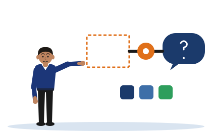

Two Ends of One Sentence
[Illustrative example - do not cite] Tharindu, Chathura and Dilini are invented students, and the literature that their gaps describe is invented too.
A gap and a research question are two ends of one sentence. The type of the gap decides what the question must test.

This tool does not read, judge or mark what you type. In the second part it only joins your words into one sentence and counts the parts you have filled. Whether the sentence is true is for you and your supervisor to decide.
Name the type of the gap
Each card is one statement from the notes. Choose its type. When you are right, you see the other end of the sentence.
Join your own two ends
Write what is absent, choose the type, and write what your project tests. The tool joins them in the pattern of Section 4.4 of the notes.
Begin as the notes do, for example: "No reviewed study ..."
The type of this gap
Begin with a word such as "comparing" or "testing", so that it follows the words "which is what this project tests by".
Your sentence
When the sentence reads as one thought, build the paragraph that leads to it, and check that paragraph in the Critical Mirror.
What you type here stays on this device. It is never sent anywhere.